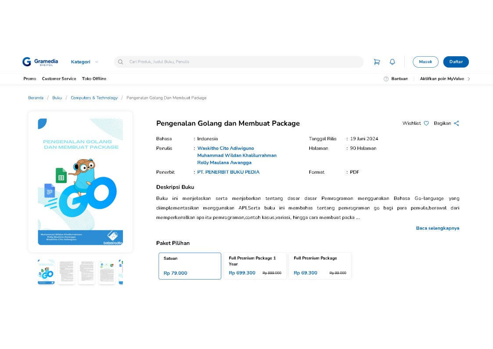

Projects

Buku
Buku Pengenalan Golang dan Membuat Package adalah buku pemrograman dasar golang untuk pemula dan juga contoh penggunaan golang sebagai API

Praktik Pengabdian Masyarakat
Kegiatan Praktik Pengabdian Msyarakat SMAT Darul 'Amal di Kecamatan Ciracap, Kabupaten Sukabumi